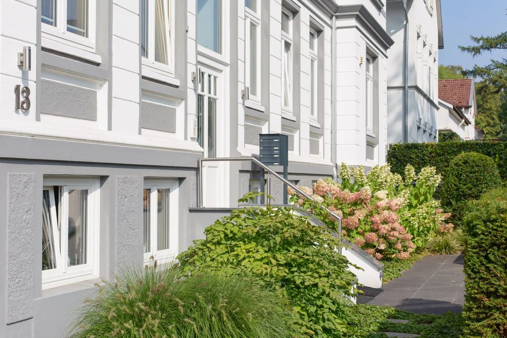

Praxis & Team
Ein Ort, an dem Sie sich gut aufgehoben fühlen.
Unsere hellen und hyggelig gestalteten Praxisräume in einem diskreten Altbau in Hamburg-Nienstedten bieten einen geschützten Ort.
In einer vertrauensvollen und wertschätzenden therapeutischen Beziehung darf alles gesagt werden. Selbstverständlich unterliegen alle Gespräche der gesetzlichen Schweigepflicht.

Gemeinsam für Sie da: Wir arbeiten nicht nebeneinander, sondern miteinander.
Als kleines Team approbierter Psychologischer Psychotherapeutinnen tauschen wir uns regelmäßig fachlich aus und verstehen unterschiedliche Erfahrungen, Perspektiven und therapeutische Schwerpunkte als Bereicherung.
Unsere Zusammenarbeit ist geprägt von Wertschätzung, Vertrauen, Offenheit, gegenseitiger Unterstützung und Kreativität.
Uns verbindet eine gemeinsame therapeutische Haltung: wissenschaftlich fundiert, ressourcenorientiert und getragen von der Überzeugung, dass Entwicklung ein lebenslanger Prozess ist.
Davon profitieren unsere Patientinnen und Patienten:
- Sie treffen auf ein beständiges Team in einer Praxis mit verlässlichen Strukturen, in der Verantwortung gemeinsam getragen wird.
- Den therapeutischen Prozess gestalten wir mit Herz, Sorgfalt, Kreativität und Engagement.
- Uns berührt die Vielfalt menschlicher Erfahrungen ebenso wie das, was uns als Menschen verbindet.
- Diese Faszination und die Freude an unserer Arbeit inspirieren uns, unsere Praxis und unsere therapeutische Arbeit gemeinsam kontinuierlich weiterzuentwickeln.
Das Team
Ihre Therapeutinnen
-
Anna Laurila
Diplom-Psychologin, Approbierte Psychologische Psychotherapeutin (Verhaltenstherapie)
Mehr -
Rebecca Pauly
Master of Science Psychology, Approbierte Psychologische Psychotherapeutin (Verhaltenstherapie)
Mehr -
Charlotte Farmand
Master of Science Psychology, Approbierte Psychologische Psychotherapeutin (Verhaltenstherapie)
Mehr
„Ohne Grundsätze ist der Mensch wie ein Schiff ohne Steuer und Kompass“